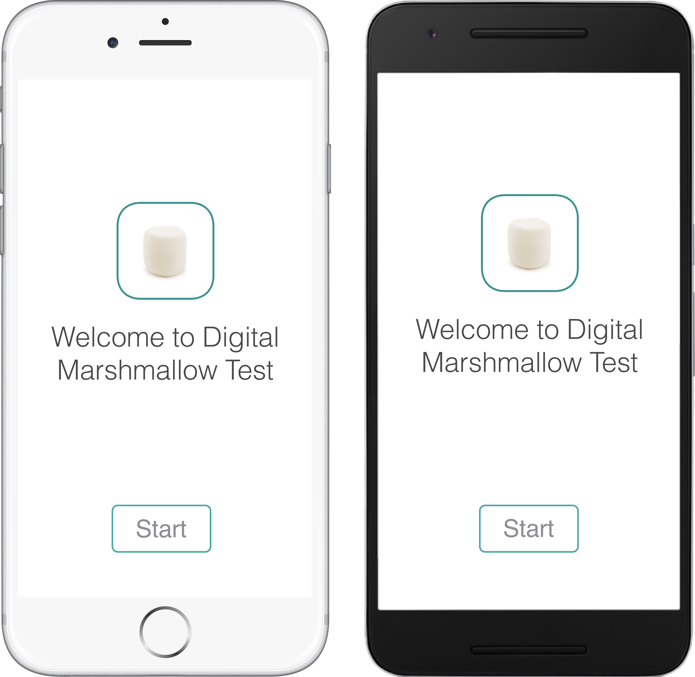

The Digital Marshmallow Test
The Digital Marshmallow Test (DMT) is a mobile app that hopes to advance the science in identifying, understanding and, eventually, helping individuals who sometimes have difficulty regulating their behavior or act impulsively in certain situations.

